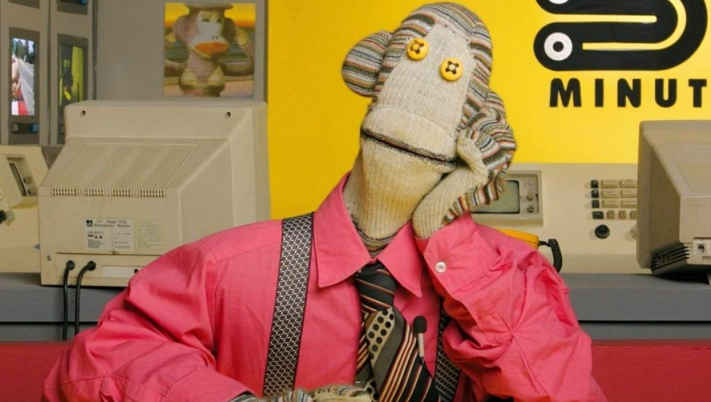

Tulio Triviño
Soy tan importante que tengo un rulex de oro bañado en super oro con incrutaciones de diamantes y engrenajes de plastigoma que solo yo puedo tener por ser me mejor conductor del mundo

Dato curioso sobre Tulio: Tulio es el conductor del noticiero y es conocido por tener una labadora para lavaros y es la segunda persona con mas corbatas de titirilquen.
<h1>¡Que agrego aqui juanin, voy a poner que soy el señor amable 2015!</h1>Juan Carlos Bodoque: Contenido y Semántica
Bodoque prefiere los datos claros. Usamos etiquetas semánticas para que el mensaje no se pierda en el bosque.
Dato Verde: Usar
<section> ayuda a organizar tu
código como Bodoque organiza sus apuestas.
Juanín Juan Harry: El Gran Contenedor
Juanín se encarga de que todo esté en su lugar. En HTML, los
<div> y <main> son los Juanín
que agrupan todo el caos.